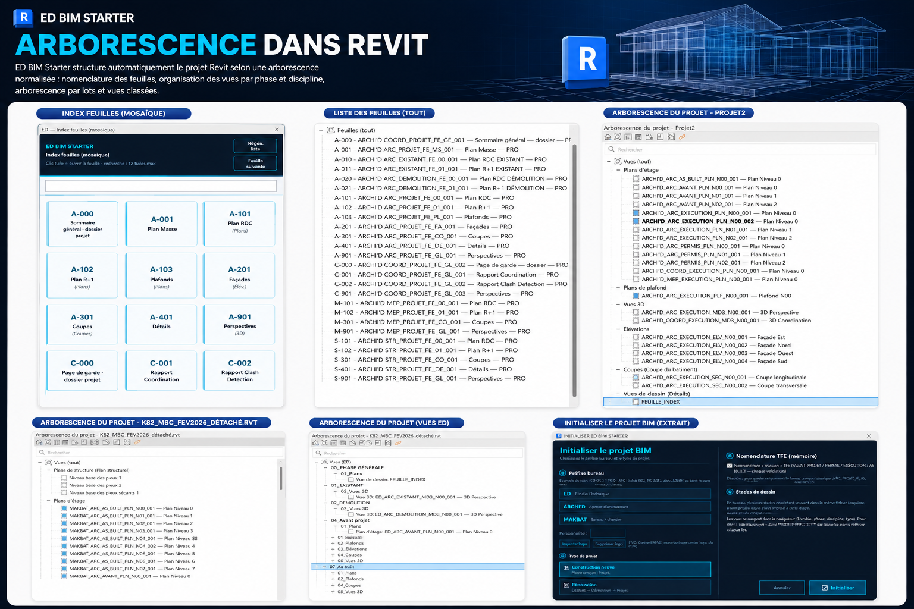
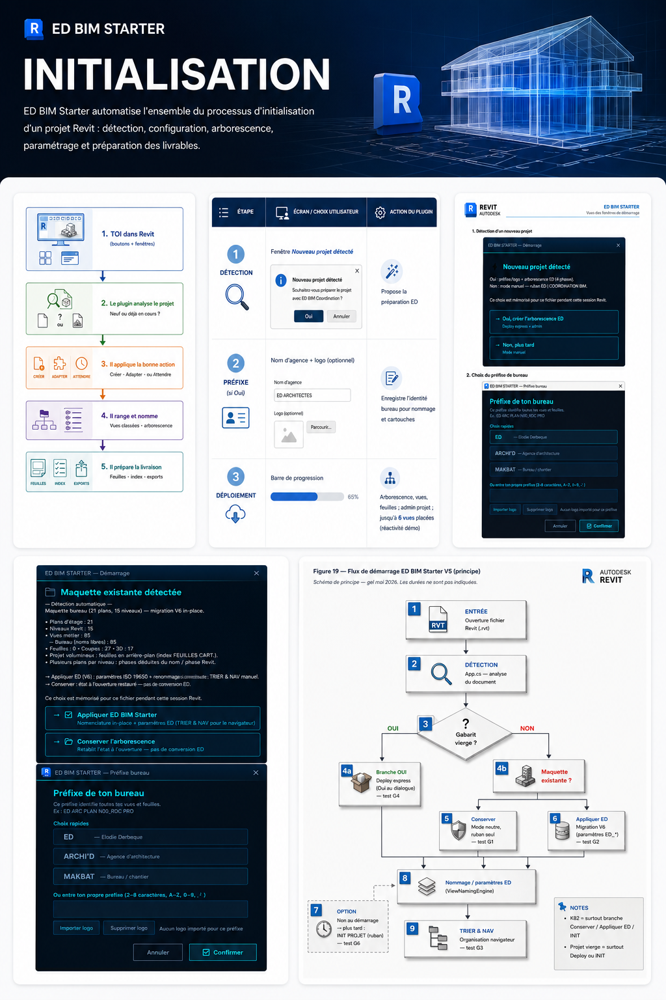
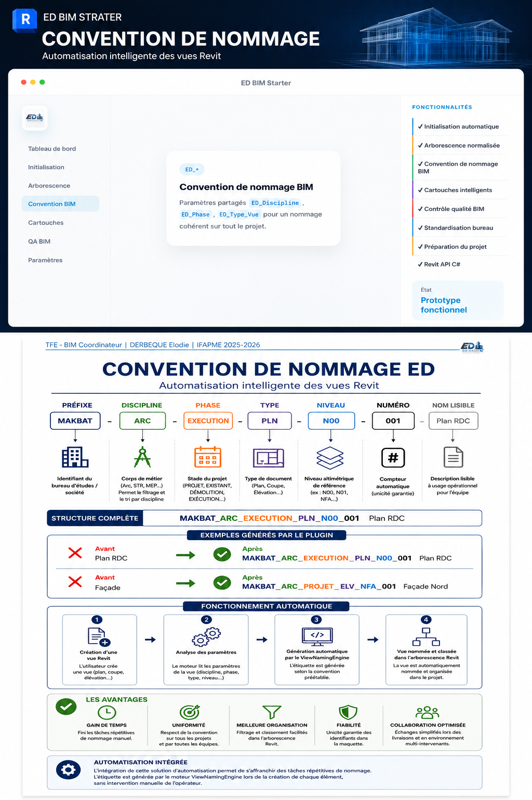
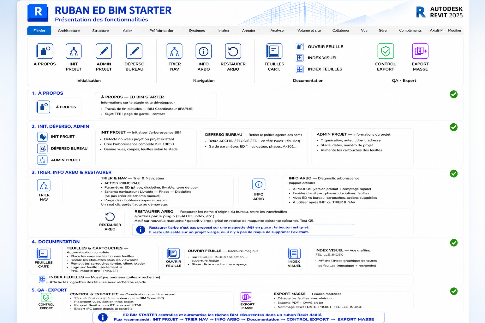
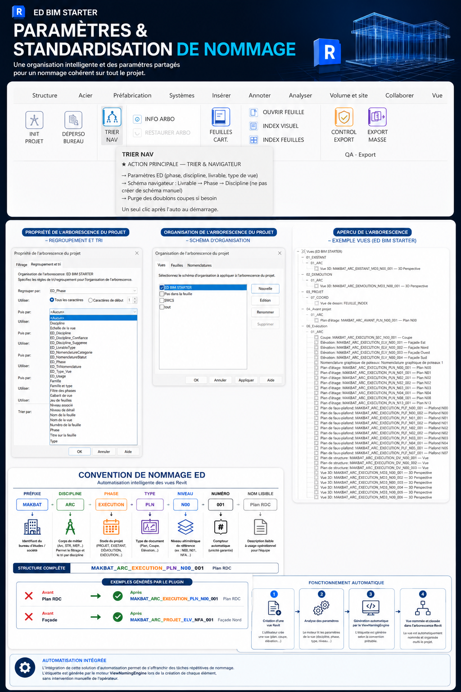
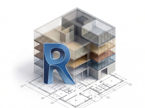
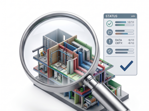
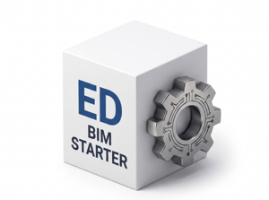
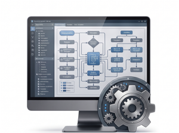
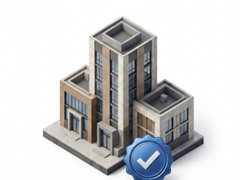

Modeleuse BIM junior — débutante en dessin
Je débute dans le dessin technique sur Revit. Mon objectif est de consolider mes bases, de suivre les consignes du projet et de gagner progressivement en autonomie.
Je débute dans le dessin et la modélisation sur Revit, après une formation BIM à l’IFAPME. Je recherche un poste junior pour apprendre au sein d’une équipe, avec la rigueur acquise en 20 ans d’agencement intérieur.
Je recherche un poste de modeleuse BIM junior pour progresser dans le dessin, la modélisation et la production de plans sur Revit. Je souhaite apprendre les méthodes de l’équipe et contribuer aux projets avec un accompagnement adapté à mon niveau.
Je débute dans le dessin technique sur Revit. Mon objectif est de consolider mes bases, de suivre les consignes du projet et de gagner progressivement en autonomie.
Mon expérience en cuisine équipée m'a habituée à lire un espace, organiser des contraintes, coordonner les intervenants et transformer un besoin client en solution concrète.
Mon parcours professionnel m'a donné une vraie culture du suivi, des méthodes, du travail d'équipe et de la résolution de problèmes concrets.
Ce prototype développé pendant ma formation illustre ma curiosité pour Revit et mon envie de comprendre son fonctionnement. Mon objectif professionnel reste de débuter dans la modélisation BIM.
Dans le cadre de ma formation, j’ai exploré l’organisation des vues, feuilles, cartouches et conventions de nommage. Ces éléments sont au cœur de mon projet de fin d’études, ED BIM Starter, et complètent mon apprentissage du dessin sur Revit.

Paramètres projet, phases, disciplines et base commune.
Feuilles, cartouches, vues et index utilisables.
Noms et repères cohérents pour éviter les erreurs et les pertes de temps.
ED BIM Starter est un prototype développé en C# pendant ma formation, pour automatiser certaines tâches répétitives de préparation. Les fonctionnalités ci-dessous présentent ce travail d’études.

Création immédiate de la structure du projet : gabarit, vues, feuilles et nomenclatures de base.
Conservation ou restauration automatique de l'arborescence de vues.

Paramètres partagés pour un nommage cohérent.

Auto-nommage et dépersonnalisation bureau appliqués automatiquement.
Système de score avant export.

Déploiement des réglages ED sur un nouveau projet en un clic.





Je poursuis mon apprentissage de Revit pour le dessin et la modélisation. Les autres outils ci-dessous ont été abordés en formation ou utilisés pour mon prototype ; cette liste ne représente pas un niveau de maîtrise expert.
Je débute dans le dessin et la modélisation sur Revit. Je souhaite rejoindre une équipe pour apprendre, participer à la production de plans et progresser sur des projets concrets. Échangeons sur un poste junior adapté à mon profil.